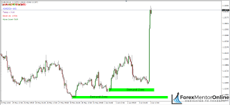

News
-

31st January 2023 by
The Basics of Technical Analysis
Technical analysis is a powerful tool used by traders to make informed decisions in the financial markets. It involves evaluating historical price data and volume to predict future price movements. Here are some key concepts in technical analysis:
- Candlestick Patterns: Candlestick charts display price movements over a specific time period. Patterns like doji, hammer, and engulfing can signal potential reversals or continuations.
- Support and Resistance: Identify levels at which an asset's price has historically had a hard time moving above (resistance) or below (support). These levels can help predict future price movements.
- Indicators: Use technical indicators like Moving Averages, Relative Strength Index (RSI), and MACD to assess the strength and momentum of a trend.
- Trend Lines: Draw trendlines to connect significant highs or lows. Trends can help you understand the direction of the market.
Mastering technical analysis takes time and practice. Stay tuned to our channel for in-depth tutorials and real-time analysis. Equip yourself with the skills to navigate the dynamic world of trading.
-

31st January 2023 by
Understanding Fundamental Analysis
Fundamental analysis involves evaluating a financial instrument's intrinsic value by examining related economic, financial, and other qualitative and quantitative factors. Here are some key components of fundamental analysis:
- Economic Indicators: Assess economic indicators like GDP, unemployment rates, and inflation to gauge a country's economic health.
- Corporate Earnings: Analyze a company's financial statements, including income statements, balance sheets, and cash flow statements.
- Interest Rates: Changes in interest rates can impact the cost of borrowing and spending, influencing economic conditions and asset prices.
- Market Sentiment: Understand market sentiment through news, social media, and financial reports, as it can impact investor behavior.
Stay informed about economic events and company news. Fundamental analysis is crucial for long-term investors seeking to make sound investment decisions.